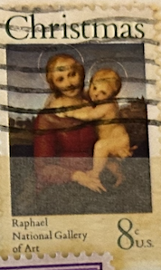
| SOURCE | TITLE| IMAGE MATCH | click to source page |
| eBay | USA Christmas Raphael National Gallery of Art 8 Cents Stamp - #S41455NQ | eBay | 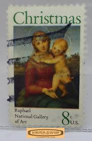 |
| eBay | 1973 Christmas Madonna Raphael Single 8c Postage Stamp - Sc# 1507 - MNH - CW424c | eBay | 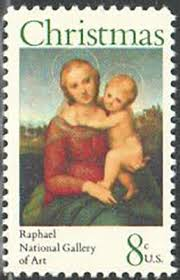 |
| BidCurios | USA - Used Old stamp - Christmas - (B-001/U1)r - BidCurios | 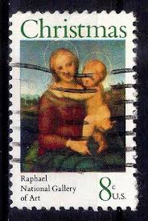 |
| Mystic Stamp Company | 1507 - 1973 8c The Small Cowper Madonna - Mystic Stamp Company | 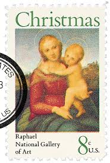 |
| Mercari | 1945 United States "Christmas Seal" (Single) | Mercari | 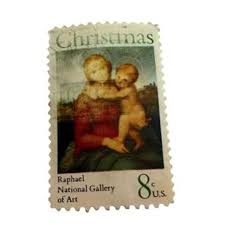 |
| 123RF | USA - CIRCA 1984 A Stamp Printed In The USA, Shows The Madonna And Child By Fra Filippo Lippi, National Gallery, Circa 1984 Fotos, retratos, imágenes y fotografía de archivo libres de | 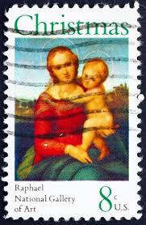 |
| HipStamp | Browse Products / HipStamp | 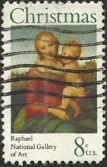 |
| Shutterstock | 21 Small Cowper Madonna Royalty-Free Images, Stock Photos & Pictures | Shutterstock | 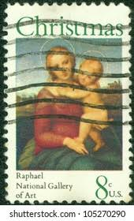 |
| Shutterstock | United States America Circa 1991 Post Stock Photo 1108030478 | Shutterstock | 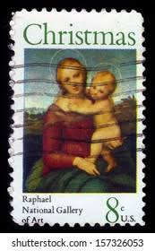 |
| Kenmore Stamp | 1507 - 8¢ Madonna - Raphael | 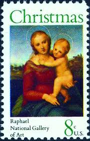 |
| iStock | Madonna With Jesus Child On Postage Stamp Stock Photo - Download Image Now - Nativity Scene, Painted Image, Virgin Mary - iStock | 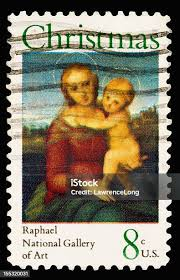 |
| Stamps.org | Madonna and Child | 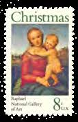 |
| eBay | MCHs Collection_ US Scott #1507 [1973] Christmas_Madonna~ 8¢ | eBay | 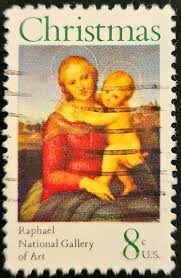 |
| Shutterstock | 21 resultados de imágenes, fotos de stock e ilustraciones libres de regalías para Small cowper madonna | Shutterstock | 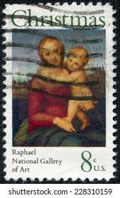 |
| eBay | 1973 Christmas Raphael Madonna & Child 8c Full Uncut Stamp Sheet (50) | eBay | 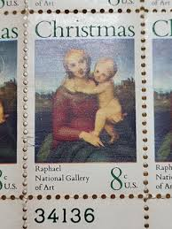 |
| eBay | US Sc# 1507 ERROR Christmas Stamp Mint NH Misperfs 1973 | eBay | 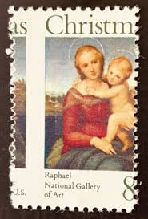 |
| Alamy | The Small Cowper Madonna Stock Photo - Alamy | 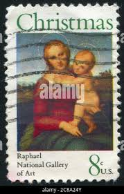 |
| eBay | CHRISTMAS STAMP USA 1973 "Madonna by Raphael" Scott 1507 Beautiful Colorful /93 | eBay | 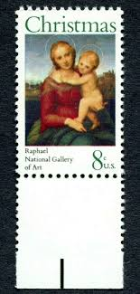 |
| eBay | 1507 8 Cent Madonna and Child Christmas Top Margin Misperf. | eBay | 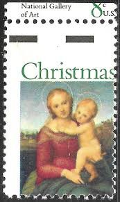 |
| eBay | Scott # 1507...8 Cent ....Christmas...6 Stamps | eBay | 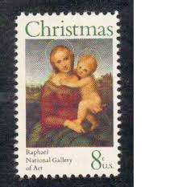 |
| eBay | 1507, Mint NH 8¢ Hard to Find Misperforation Error With Normal - Stuart Katz | eBay | 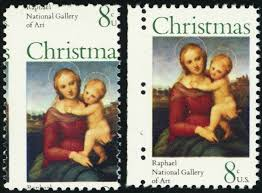 |
| marineandmainland.com | Madonna And Child Us Postage Stamp Collection Madonna And Child Christmas Stamps Collection - Genuine US Postage Stamps In Protective Portfolio Vintage Stamps | 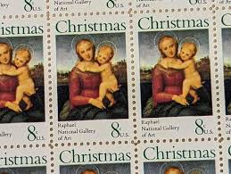 |
| eBay | STAMP US SCOTT 1507 "Madonna by Raphael" 8 CENT 1973 USED HORIZ PAIR | eBay | 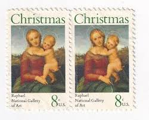 |
| eBay | 1973 U.S. 8 Cent Christmas Stamp Madonna by Raphael Scott #1507 MNH | eBay | 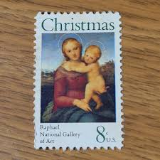 |
| eBay | Scott #1507 Madonna (Raphael) Block of 4 Stamps - MNH | eBay | 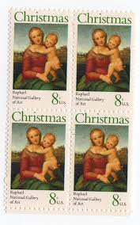 |
| eBay | 1973 CHRISTMAS MADONNA & CHILD BY RAPHAEL PANE OF 50 STAMPS SCOTT 1507 MNH | eBay | 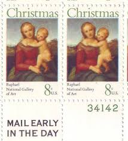 |
| eBay | US. 1507. 8c. Madonna, by Raphael. Christmas Issue. Single w/Pl#. MNH. 1973 | eBay | 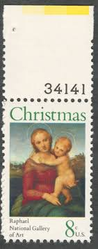 |
| eBay | CHRISTMAS STAMP USA 1973 "Madonna by Raphael" Scott 1507 Beautiful Colorful /90 | eBay | 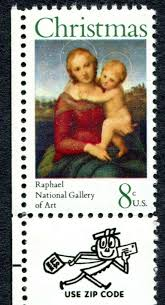 |
| eBay | 1973US #1507 8c Christmas Madonna Child Raphael Mail Early Block of 4 MNH- #2046 | eBay | 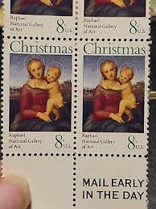 |
| eBay | US. 1507. 8c. Madonna, Christmas Issue , Zip Block of 4 LL. MNH. 1973 | eBay | 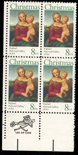 |
| eBay | STAMP US SCOTT 1507 "Madonna by Raphael" 8 CENT 1973 MNG | eBay | 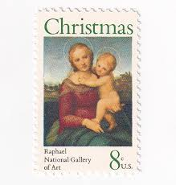 |
| Walmart | Pre-Owned Christmas in Germany (Christmas Around the World) (Unknown) 0736800891 9780736800891 - Walmart.com | 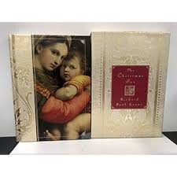 |
| eBay | 1507, MNH 8¢ Two Way Misperforated Freaky Error Sheet of 50 Stamps * Stuart Katz | eBay | 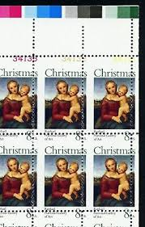 |
| eBay | CHRISTMAS PLATE BLOCK: Four 1973 Beautiful US Scott 1507 Madonna by Raphael-84 | eBay | 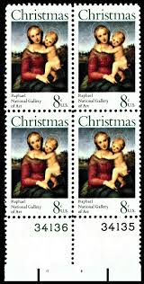 |
| eBay | STAMP US SCOTT 1507 "Madonna by Raphael" 8 CENT 1973 USED STRIP OF 3 | eBay | 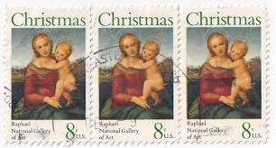 |
| eBay | STAMP US SCOTT 1507 "Madonna by Raphael" 8 CENT 1973 MNH PB OF 4 UPPER - D | eBay | 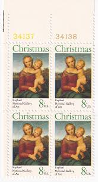 |
| eBay | US Plate Block Scott# 1507 Christmas Issue 1973 MNH Blk of 4 | eBay | 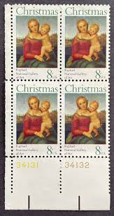 |
| Linns Stamp News | New U.S. holiday stamps receive Scott numbers | 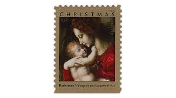 |
| eBay | US Scott # 5725 Block Of 4 Stamps Front & Back MNH, Christmas, Virgin & Child | eBay | 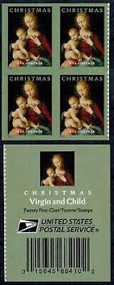 |
| eBay | US 5331 Christmas Madonna & Child by Bachiacca F single MNH 2018 | eBay | 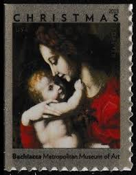 |
| eBay | USA - 2022 - Forever - Christmas-Virgin & Child - Scandicci Lamentation - #18321 | eBay | 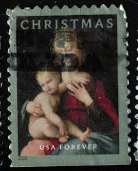 |
| Shutterstock | Raffaello Sanzio Da Urbino: Over 247 Royalty-Free Licensable Stock Photos | Shutterstock | 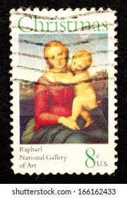 |
| usa-stamps.com | USA Stamps | Browse USA Stamps | Year Sets Collection | 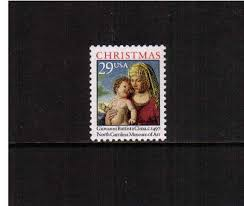 |
| eBay | UNITED STATES 1507 PB MNH 2019 SCOTT SPECIALIZED CATALOGUE VALUE $2.00 | eBay | 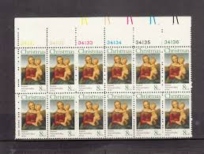 |
| PicClick | NIUE MNH STAMPS on two pages $7.50 - PicClick | 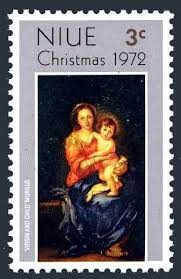 |
| University of Dayton | Postage Stamps - Religious | Oceania | University of Dayton | 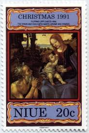 |
| Alamy | NEW ZEALAND — CIRCA 1972: stamp printed by New Zealand, shows daisy, circa 1972 Stock Photo - Alamy | 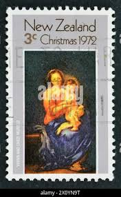 |
| eBay | 4424a SASSOFERRATO HEARST CASTLE CHRISTMAS Pane of 20 44 Cent Stamps MNH 2008 | eBay | 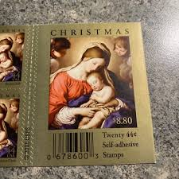 |
| A COLLECTION OF TRINIDAD AND TOBAGO CHRISTMAS STAMPS. Courtesy Lawrence Hyde | 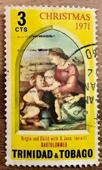 | |
| Shutterstock | 29 Virgin Child Murillo Royalty-Free Images, Stock Photos & Pictures | Shutterstock | |
| eBay | 2009USA #4424a 44c Madonna & Child by Castle - Booklet 20 christmas | eBay | |
| Dreamstime.com | Grenada Word Being Revealed with the Shadow of a Flying Airplane on the Beach Stock Photo - Image of shadow, flight: 244445958 | |
| eBay | 1932 An Exhibition Italian Paintings Mr Samuel Kress Brooks Memorial Art Gallery | eBay | |
| Find Your Stamps Value | Paintings: Lady with Unicorn, by Raphael (1483-1517) 1fo multicolored stamp price, value | |
| Linns Stamp News | Stamps for Charles M. Schulz, Webb space telescope, more added to 2022 U.S. program | |
| eBay | God With Us - A Celebration Of Christmas Carols & Classics Cassette 1997 Sealed | eBay | |
| USPS | New Virgin and Child Forever stamp available | |
| Biblioguides | Elizabeth Ripley - Biblioguides | |
| eBay | USPS Forever Postage Stamp Promo Magnet set Holiday Christmas H22-CCZ-SM-1020 | eBay | |
| HipStamp | Stampmall / HipStamp |